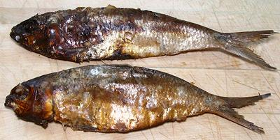

This is a very important fish in West Africa. It is found from Western Sahara south to northern Angola. Traditionally it was hot smoked until very dry for storage. Today, as ice becomes available in West Africa, it is becoming popular unsmoked. It is an inshore fish in estuaries and well up rivers, so it can be fished from canoes. The catches from individual boats are purchased and consolidated by processors and distributors. This fish is IUCN rated LC (Least Concern). Photo by Falia (retouched to clean up) distributed under license Creative Commons Attribution-ShareAlike v3.0 Unported.
More on the Herring Family.
 The photo to the left shows Bonga Shad as it is traditionally prepared. It is cooked over a hot fire, then the fire is set to smolder and smoke. The smoking continues until the fish is thoroughly dry. This is different from North American / European hot smoking which is just for flavor and still needs to be refrigerated. The photo specimens were purchased on-line for 2018 US $1.21 / ounce plus shipping.
In this form, the fish is highly flavored and used to add flavor to soups and stews. It is usually added to the stew in big chunks and stewed soft before the short cooking ingredients are added. Because the fish is still covered with scales, The skin can be easily flaked off, so I simply remove it, then break the four meaty parts loose from the bones and use those.
You could also simmer a whole fish alone to flavor the water for stock, then strain the solids out. Smoked Bonga is also ground to powder to make it more convenient to add to soups and stews, and a lot less is needed than for chunks. West African stews and soups do tend to be highly flavored because they are served with very bland staples such as fufu.
Bonga is also fermented, salted and dried, but only in Gambia and Senegal.
It is roasted, salted and dried in Senegal only. Countries south of the
Sahara too humid for sun drying fish, it must be done over fires.